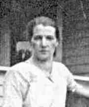

|
|
 Catherine SCHAMPEL (1884-1968) |
Catherine SCHAMPEL
• She appeared in the 1900 census on 16 Jun 1900 in McKeesport, Allegheny, PA. 7 • She appeared in the 1910 census on 19 Apr 1910 in South Brownsville, Fayette, PA. 8 • She appeared in the 1920 census on 12 Jan 1920 in South Brownsville, Fayette, PA. 3 • She appeared in the 1930 census on 7 Apr 1930 in South Brownsville, Fayette, PA. 1 • She appeared in the 1940 census on 4 Apr 1940 in Brownsville, Fayette, PA. 9 Catherine married Charles Henry DONET, son of Gottholt August DONATH and Rosine Frederike BRÜCKNER, about 1906.1 (Charles Henry DONET was born on 18 Jun 1875 in McKeesport, Allegheny, PA,10 11 12 died on 23 Aug 1933 in Brownsville, Fayette, PA 5 11 and was buried on 26 Aug 1933 in Lafayette Memorial Park, Brier Hill, Fayette, PA 6 11.) |
1 Pennsylvania, Allegheny County, 1930 U.S. Census, Population Schedule (Washington, D.C., National Archives and Records Administration), ED 26-87, Sheet 12, Line 48.
2 Social Security Administration, Death Master File (http://www.ancestry.com/search/rectype/vital/ssdi/main.htm).
3 Pennsylvania, Fayette County, 1920 U.S. Census, Population Schedule (Washington, D.C., National Archives and Records Administration), ED 85, Sheet 2, Line 33.
4 Brownsville Telegraph, Catherine Schampel Donet Obituary (Found on FindaGrave.com).
5 Tom Donet, Donet Family GEDCOM (14 Jun 2007).
6 Find A Grave, Inc, Find-A-Grave.com (http://www.findagerave.com).
7 Pennsylvania, Allegheny County, 1900 U.S. Census, Population Schedule (Washington, D.C., National Archives and Records Administration), ED 433, Sheet 21, Line 57.
8 Pennsylvania, Fayette County, 1910 U.S. Census, Population Schedule (Washington, D.C., National Archives and Records Administration), ED 68, Sheet 2, Line 15.
9 Pennsylvania, Fayette County, 1940 U.S. Census, Population Schedule (Washington, D.C., National Archives and Records Administration), ED 26-4, Sheet 2, Line 46.
10 National Archives and Records Administration., World War I Selective Service System Draft Registration Cards, 1917-1918 (Washington, D.C.).
11 Commonwealth of Pennsylvania, Department of Health, Bureau of Vital Statistics, Pennsylvania Death Certificates, 1906-1970 (Harrisburg, PA (via Ancestry.com)), Charles Donet (filed 25 Aug 1933).
12 Pennsylvania, Allegheny County, 1880 U.S. Census, Population Schedule (Washington, D.C., National Archives and Records Administration), ED 40, Sheet 42, Line 47.